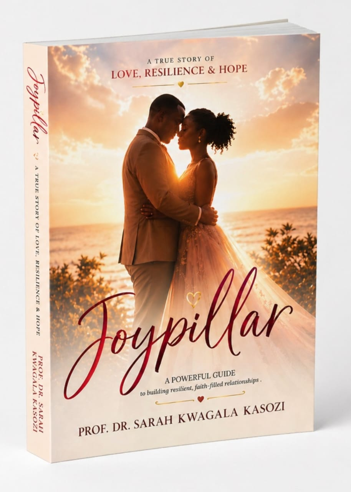
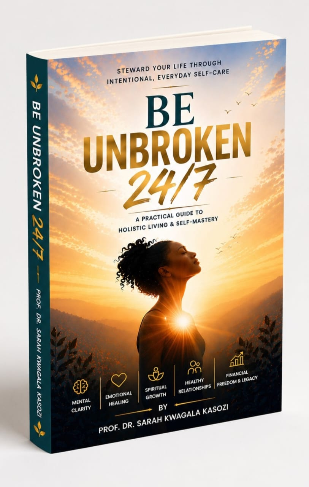

Dedicated to creating safe, healthy and empowering environments for children, young people and families.
A visionary leader with extensive experience in social entrepreneurship, mental health practice, human rights advocacy, education, business development, and Christian spiritual guidance, dedicated to empowering children, youth, and families.
Prof. Dr. Sarah Kwagala Kasozi is a powerful voice for the voiceless. With over 15 years of experience championing the rights and well-being of children, young people, and families in Uganda, she is a sought-after expert in child and family development. Dr. Sarah’s mission is to create safe, healthy, and empowering environments that enable individuals and organizations to reach their full, God-given potential.
Individual and group counseling services focusing on personal growth, trauma recovery, and life transitions.
Inspirational speaking for conferences, workshops, and organizational events on leadership and personal development.
Pastoral care, spiritual counseling, and faith-based mentoring for individuals seeking spiritual growth.
Leadership development, executive coaching, and organizational transformation consulting, with a focus on building high-performing teams, enhancing strategic vision, and driving sustainable growth.
Personal and professional mentoring for emerging leaders and professionals across various fields, with guidance in career growth, leadership development, and navigating life’s key transitions.
Educational program development, curriculum design, and academic leadership consulting for institutions, as well as strategic planning and business growth advisory for organizations.
Explore selected interviews, media features, and speaking engagements designed to inspire healing and drive transformational growth.
Read about Dr. Sarah's transformational work advocating for safe families.
Read Full StoryDr. Kwagala talks extensively about teenage pregnancy and societal impact.
Read ArticleDiscover the core mission and background of the Heart to Heart Initiative.
Visit Initiative
A powerful guide to building strong, resilient, and purpose-driven relationships, sharing practical wisdom on love, faith, and perseverance.

A practical guide to holistic living and self-mastery, helping you balance progress, purpose, and peace to pursue your God-given potential.
Join our growing community to watch my national TV appearances, interviews, and deep dives into mental health, personal healing, and spiritual growth.
Subscribe to Channel"True leadership is not about being in charge, but about taking care of those in your charge. When we lead with our hearts, we create ripples of positive change that extend far beyond what we can see."- Prof Dr. Sarah Kwagala Kasozi
"Every challenge is an opportunity for growth. When we embrace our difficulties with courage and faith, we discover strength we never knew we had."
"The greatest gift we can give to others is our authentic presence. In a world full of distractions, being truly present is a radical act of love."
"Leadership begins with self-awareness. We cannot guide others to places we have never been ourselves. The journey inward is the first step of the journey forward."
Receive weekly inspirational messages and insights delivered to your inbox.
“Sarah Kwagala Kasozi is a remarkable advocate and leader whose tireless efforts have transformed countless lives across Uganda and Africa. Her dedication to creating safe spaces for children and families, coupled with her passion for empowering communities, is truly inspiring. She brings a rare combination of compassion, intelligence, and professionalism to her work, making a lasting impact wherever she serves.”
“Through our partnership with Sarah Kwagala Kasozi and Heart to Heart Initiative, we have witnessed her exceptional leadership firsthand. She develops innovative and culturally relevant approaches to community healing and child protection, while remaining deeply committed to the dignity and well-being of those she serves. Her work is both impactful and transformative.”
“As a mentee of Sarah Kwagala Kasozi, I’ve had the privilege of learning from her over the years. She has shaped my confidence, character, and vision, while helping me grow spiritually, emotionally, and personally. Through her guidance, I’ve gained both knowledge and the courage to pursue what I truly desire as a young woman.”
Whether you're seeking consultation, counseling, or inspirational speaking, I'm here to support your journey toward growth and transformation.
sarahkwagalakasozi@gmail.com
+256756206086
+256782278915
Available for virtual and in-person consultations